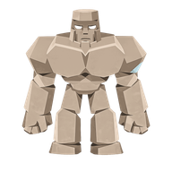
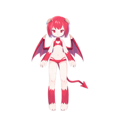
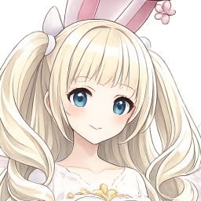
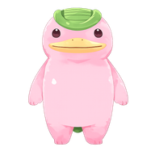
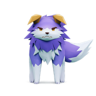
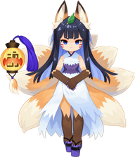
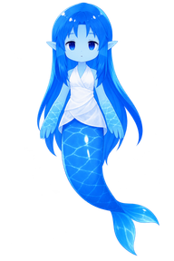

① 「一覧」: 計画する子(はじめ3体・広げて5体)が上・ほかは助手まかせ
‹ 📒 育成ノート
助手のマスモン 21体 ・ 計画中 2/3体(ノートの段2 → 段3で4体)
一覧
計画
記録
修行
チケット
📌 計画して育てる子(2/3)

ゴロンタ  キキ
キキ
キキ今日: 昼 重量上げ ・ 疲れ 38
今日の伸び 13/20

ピピ

みゅあ今日: 休み ・ 疲れ 62→32
今日の伸び 0/20
＋ 計画する子を選ぶ(あと1体)
🍃 助手まかせ(自主育成)19体
全員キキみゅあドラ…

モチモチ
攻撃型 ・ 今日の伸び 9/15

トラ吉
ライフ型 ・ 今日の伸び 15/15
🏡家
🗺町
🤝きずな
🏘フレンド
② 「計画」: 1週間の予定を日ごとに1つ。くり返す
‹ 📒 育成ノート
ゴロンタ(キキのマスモン)の1週間
一覧
計画
記録
修行
チケット
ゴロンタピピ＋
月
💪 腕立て(ちから)軽
火
🏋 重量上げ(ちから)重・疲れ大
水
🎯 的当て(命中)軽
木
🛡 耐久特訓(丈夫さ)重
金
⚔ 修行の日モンバトにいれば
土
🍃 助手にまかせるいつもどおり
日
😴 休み疲れ −90
🗓 1日の朝・昼・夜の3回とも、その日の予定で育てます。
📈 計画の子は伸び 1.3倍・失敗が半分。1日の上限は20
⚠ 疲れが70をこえた回は、予定より休みを優先します
📈 計画の子は伸び 1.3倍・失敗が半分。1日の上限は20
⚠ 疲れが70をこえた回は、予定より休みを優先します
✅ 休みが週1日あります(休みが0日だとストレスがたまり、伸びが落ちます)
見通し(1週間): ちから +52 ・ 命中 +18 ・ 丈夫さ +24 ・ ライフ +9
この予定でくり返す
🏡家
🗺町
🤝きずな
🏘フレンド
③ 「記録」: 何をして、どれだけ伸びたか(チケット・修行も1本に)
‹ 📒 育成ノート
ゴロンタ ・ Lv 24 ・ 攻撃型 ・ 計画中
一覧
計画
記録
修行
チケット
この7日の能力の変化
ライフ412 +9
ちから578 +61
かしこさ220 −3
命中377 +18
回避251 +4
丈夫さ468 +24
できごと
水 昼 🎯 的当て(計画)命中 +6
水 朝 🎯 的当て(計画)命中 +5
火 夜 🎫 重トレ(M/B管理)ちから +11 かしこさ −3
火 昼 🏋 重量上げ(計画)ちから +14 ライフ +3
火 朝 ⚔ 修行(モンヒロバトル)熟練 +5
月 夜 📣 応援熟練 +1 💗+5
関わって伸びた分(この7日): 計画 +21 ・ チケット +11 ・ 見に来た +4
🏡家
🗺町
🤝きずな
🏘フレンド
④ フレンドの家から開くと「見るだけ」(同じ部品・ボタンなし)
‹ 📒 ○○さんの育成ノート
見るだけ ・ 助手のマスモン 18体
一覧
記録
デッキ
📌 計画して育てている子

コン太
Lv 31 ・ すばやさ型
6能力(コン太)
ライフ401
ちから330
かしこさ522
命中610
回避655
丈夫さ298
🍃 ほかの子

ミズハ
Lv 22 ・ 防御型
計画の中身・チケット・修行のボタンは出しません(見るだけ)
🏡家
🗺町
🤝きずな
🏘フレンド